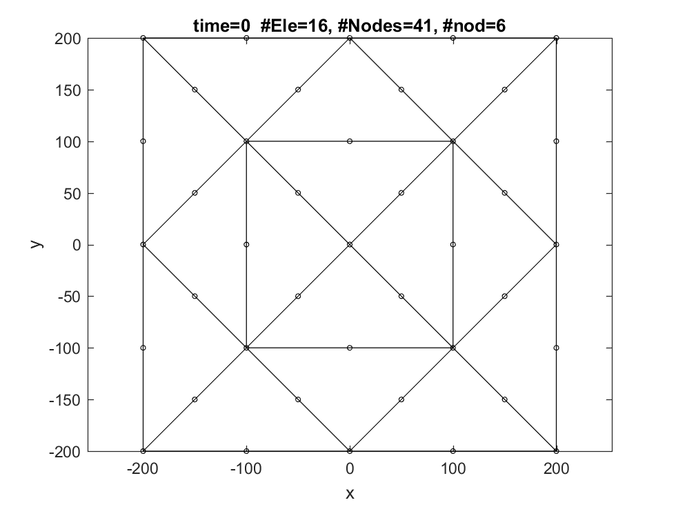
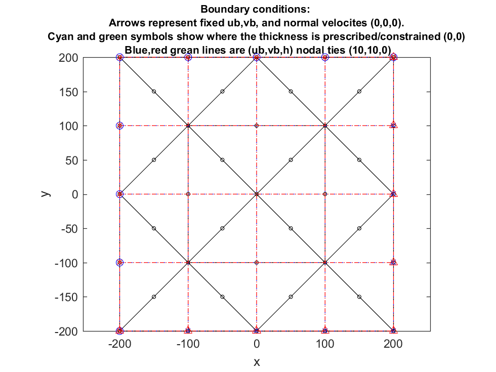
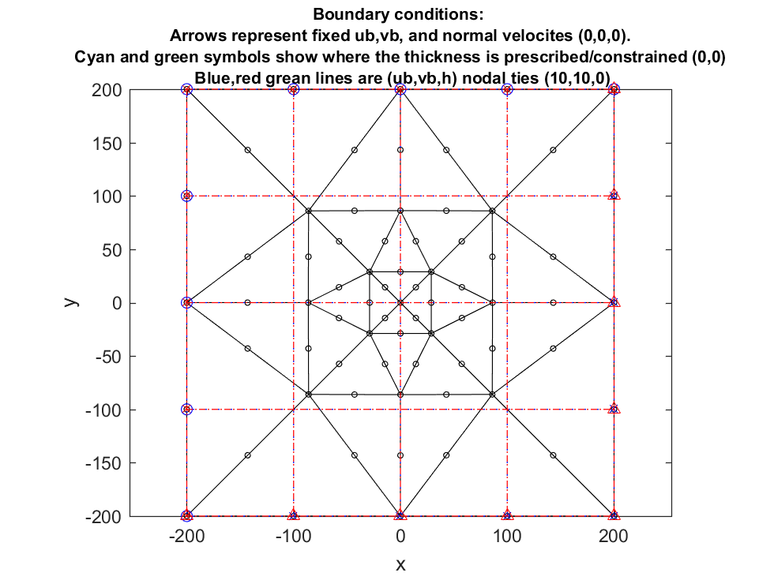
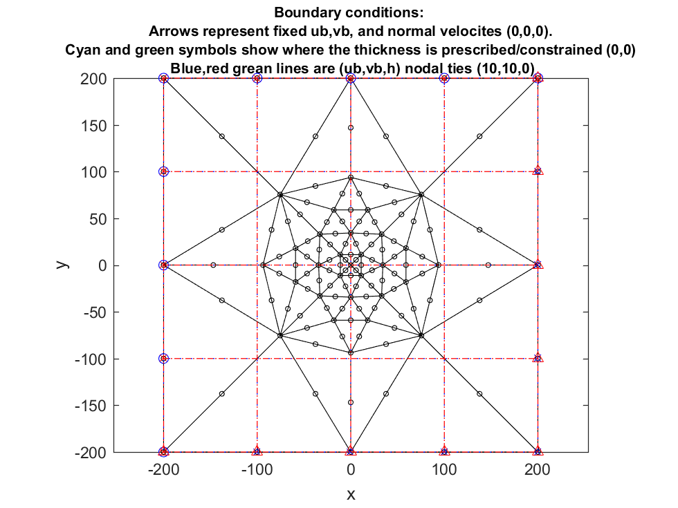
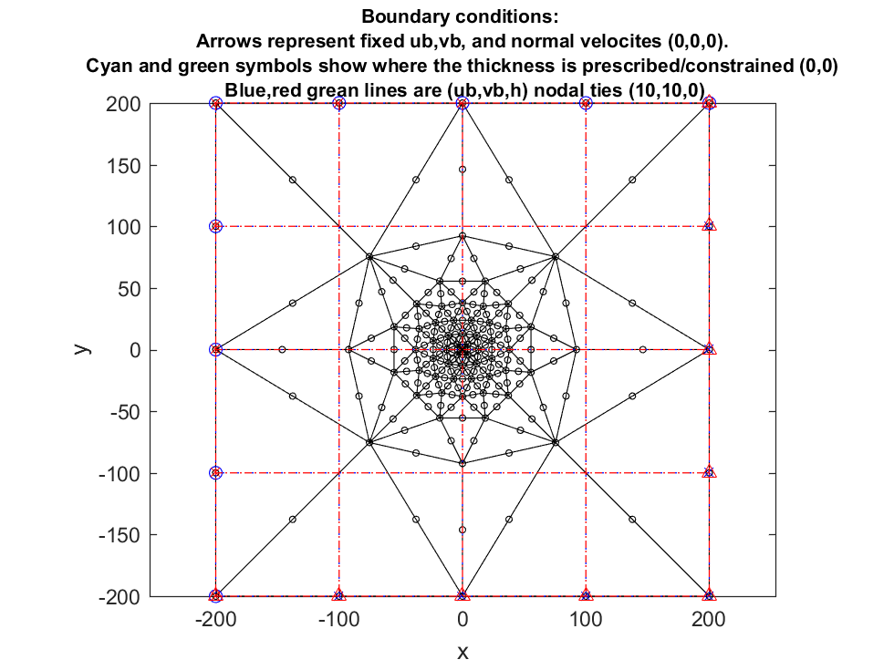
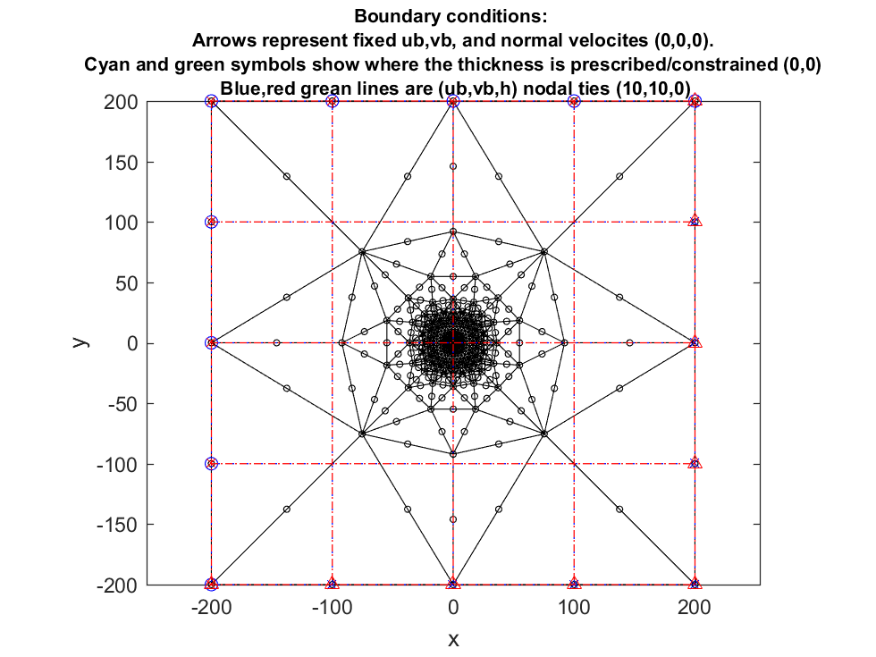
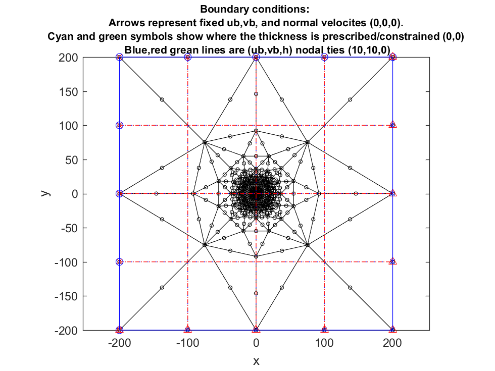
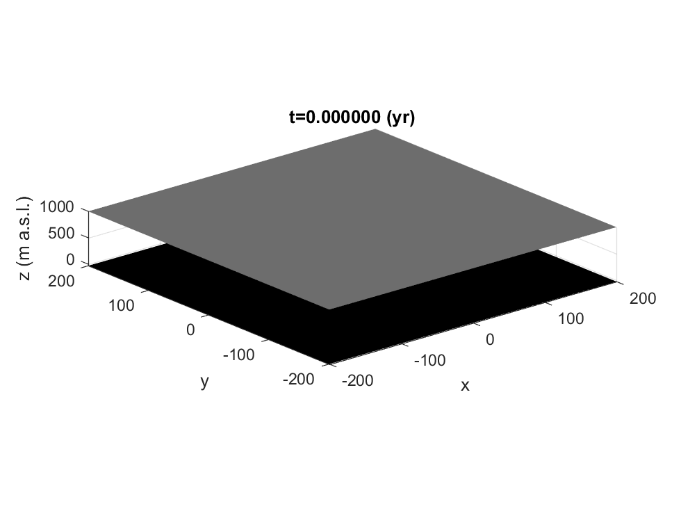
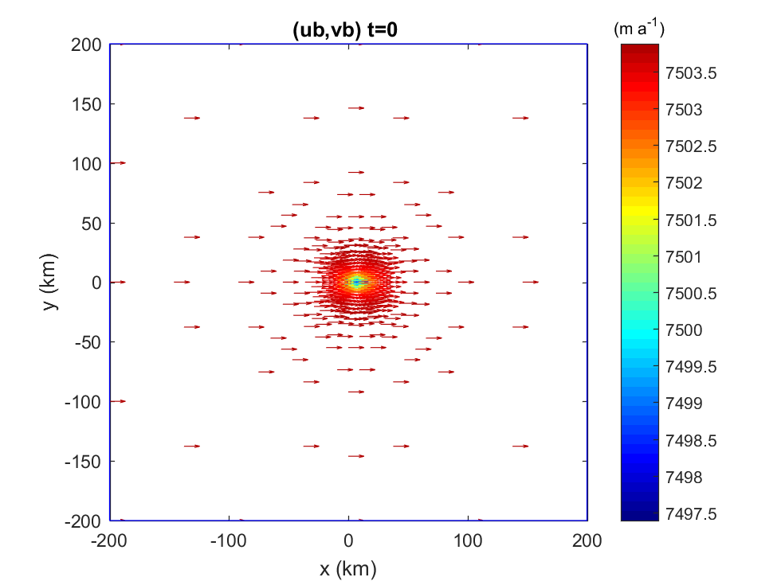

Contents
function Ua
Úa
A finite-element ice-flow model.
Flow approximations: Shallow Ice Sheet Flow Approximation (SSHEET or SIA) Shallow Ice Stream Flow Approximation (SSTREAM or SSA) Hybrid combinations of SIA and SSA (already implemented, but still being developed further...)
The code is developed by Hilmar Gudmundsson (ghg@bas.ac.uk).
Running Úa:
1) Add the folder with the Úa m-files, and its subfolders, to your matlab path. This can be done using the 'Home/Set' Path menu item, or from the command prompt doing something like: addpath('MyUaSourceFileFolder')
2) Define the Matlab environmental variable 'UaHomeDirectory'. This can for example be done as follows: setenv('UaHomeDirectory','MyUaSourceFileFolder')
3) If using the mesh generator `gmsh' (almost always the case) then also define the Matlab environmental variable 'GmeshHomeDirectory'. The gmsh program for windows is in a subfolder of Ua/Source So if you are running windows setenv('GmeshHomeDirectory','MyDrive/Ua/Source/gmsh-2.12.0-Windows') will do. Alternativily you might want to install your own copy of gmsh. If running on a Unix system, then most likely gmsh can be called without the need to set the Matlab environmental variable 'GmeshHomeDirectory'.
Now you can run Úa from within Matlab by writing Ua [Ret]
Summary: Before running Ua do
setenv('UaHomeDirectory','C:\cygwin64\home\Hilmar\ghg\Ua\Source')
setenv('GmeshHomeDirectory','C:\cygwin64\home\Hilmar\ghg\Ua\Source\gmsh-2.12.0-Windows')
UaHomeDirectory=getenv('UaHomeDirectory'); addpath(genpath(UaHomeDirectory))Then run Ua from the Source directory to see if everyting is OK.
Getting help
You can get help on the use of Úa in the same way as you would get help on various in-build matlab commands by writing `help Ua' in the matlab command line, or `doc Ua'. Most m-files that are part of the Ua program have some inbuild help text, for example try `doc Ua2D_DefaultParameters'.
To get a HTML formatted documentation try:
publish('Ua.m','evalCode',false) ; web('html\Ua.html')Defining model run
Whenever setting up your own model, create your own working directory for your model runs. Most of the parameters of a given model run are defined by the user through ` user m-files' that are called by Úa during the run.
User m-files :
- Ua2D_InitialUserInput
- DefineAGlenDistribution.m
- DefineSlipperyDistribution.m
- DefineBoundaryConditions.m (also possible to use the more limited but easier to use `DefineBCs.m' instead)
- DefineGeometry.m
- DefineDensities.m
- DefineMassBalance.m
- DefineDesiredEleSize.m
- DefineStartVelValues.m
- DefineInputsForInverseRun.m
- DefineInverseModellingVariables.m (older approach, use DefineInputsForInversion.m instead)
- UaOutputs.m
To get further information on how to use individual user m-files use help. For example: help DefineGeometry Make sure to do this from the Úa home directory, or at least not from another directory that has a m-file with the same name.
When defining a new model-run, just copy these user m-files from the Úa home directory into your own model-run directory and modify as needed.
Not all of these user m-files are always needed. For example `DefineInverseModellingVariables.m' is only needed for inverse runs. Also 'DefineStartVelValues.m' is not often required as setting start velocities to zero (the default opton) is usually a good approach. And DefineDesiredEleSizes is only needed if one finds that the standard remeshing options within Úa are too limited.
UaOutputs is only needed for producing output files or for some plotting, etc.
If any of the above listed m-Files are not found in the run directory, the corresponding m-Files in the Úa home directory are used instead.
Name of variables
Throughout the following variables stand for:
s : upper glacier surface elevation
b : lower glacier surface elevation
S : ocean surface elevation
B : bedrock elevation
(ub,vb,wb) : sliding velocity components
(ud,vd,wd) : deformational velocity components
rho : ice density (defined at nodes and does not have to be spatially uniform)
rhow : ocean density (a scalar)
AGlen : rate factor of Glen's flow law (either a nodal or an element variable)
n : stress exponent of the Glen's flow law
C : basal slipperiness ((either a nodal or an element variable)
m : stress exponent of the basal sliding law (a scalar)
as, ab : mass balance distribution over the upper (as) and lower (ab) glacier surfaces.
The mass balance is given in units distance/time, and should be
in same units as the velocity.
alpha : Slope of the coordinate system with respect to gravity.
g : The gravitational acceleration.
GF : a floating/grounded mask. This is a structure with the two
fields: node and ele. This are 1 if a node/element is grounded, 0 if
node/element is afloat.Calls to user m-files:
The calls to these functions are:
[rho,rhow,g]=DefineDensities(Experiment,CtrlVar,MUA,time,s,b,h,S,B);
[C,m]=DefineSlipperyDistribution(Experiment,CtrlVar,MUA,time,s,b,h,S,B,rho,rhow,GF);
[AGlen,n]=DefineAGlenDistribution(Experiment,CtrlVar,MUA,time,s,b,h,S,B,rho,rhow,GF);
[as,ab]=DefineMassBalance(Experiment,CtrlVar,MUA,time,s,b,h,S,B,rho,rhow,GF);
If mass-balance geometry feedback is included, define mass balance as:
[as,ab,dasdh,dabdh]=DefineMassBalance(Experiment,CtrlVar,MUA,time,s,b,h,S,B,rho,rhow,GF);
BCs=DefineBoundaryConditions(Experiment,CtrlVar,MUA,BCs,time,s,b,h,S,B,ub,vb,ud,vd,GF)
BCs is an instant of the class `BoundaryConditions'. To see the fields of BCs have a look at BoundaryConditions.m in the editor or do help BoundaryConditions.m . The fancy way of doing this is to do: publish('BoundaryConditions.m') ; web('html\BoundaryConditions.html') from the Úa home directory.
[s,b,S,B,alpha]=DefineGeometry(Experiment,CtrlVar,MUA,time,FieldsToBeDefined);
[ub,vb,ud,vd]=DefineStartVelValues(Experiment,CtrlVar,MUA,ub,vb,ud,vd,time,s,b,h,S,B,rho,rhow,GF,AGlen,n,C,m);
Getting information about the FE mesh from within user m-files:
In all user m-files the variable MUA is given as an input. MUA is a structured variable with the following fields coordinates: Nnodes x 2 array with the x and y coordinates of all nodal points connectivity: mesh connectivity Nnodes: number of nodes in mesh Nele: number of elements in mesh nod: number of nodes per element nip: number of integration points points: local element coordinates of integration points weights: weights of integration points Boundary: a structure containing info about mesh boundary This structure is calculated as: MUA.Boundary=FindBoundary(connectivity,coordinates); and info about the fields can be found in `FindBoundary.m' Deriv: element derivatives DetJ: element determinants
The values of MUA should never be changed directly by the user.
Meshing
There are various ways of meshing the computational domain.
In almost all cases the simplest option tends to be to define the outlines of the computational domain in Ua2D_InitialUserInput. In that case Úa will call an external mesh generator. The external mesh generator used by Úa is "gmsh" which is a well known and well supported open source mesh generator (http://geuz.org/gmsh/) The outlines of the mesh are defined by the variable 'MeshBoundaryCoordinates' set in Ua2D_InitialUserInput.m. This approach is quite flexible and allows for complicated computational domains containing holes and/or separated domains.
For examples of how to generate different type of meshes run ExamplesOfMeshGeneration
The ExamplesOfMeshGeneration.m containes information and examples on how to define inputs for various types of meshes.
There are also various ways of refining the mesh. Boht global and local (explicit) adaptive meshing is supported. See further explanations in 'Ua2D_DefaultParamters.m'
Control parameters The type of runs (static, transient, forward, inverse) and various paramters affecting the run are specified using the variable `CtlrVar'. This variable is defined by the user in `Ua2D_InitialUserInput.m'. This variable has a large number of fields. List of all fields with descriptions can be found in `Ua2D_DefaultParameters.m'
if nargin==0 UserRunParameters=[]; end Ua2D(UserRunParameters)
Warning: Using default Ua2D_InitialUserInput
Number of elements in CtrlVar.RefineCriteriaFloationLimit (3) not equal to number of RefineCriteria (1)
Assuming no such limits for any of the mesh refinement criteria.
Number of elements in CtrlVar.RefineCriteriaWeights (3) not equal to number of RefineCriteria (1)
Assuming all criteria have equal weights. All weights set to 1
In the SSHEET and the Hybrid flow approximations Cmin must be zero. Cmin set to zero.
************************** Úa version: 13 May 2016 **********************
Run starts at 27-May-2016 11:33:42
Experiment DefaultRun
Time-independent model run
*****************************************************************************
Creating an input file for gmesh : GmeshFile.geo
Calling gmesh with GmeshFile.geo as a geo input file, and creating GmeshFile.msh output file
The gmesh call is: C:\cygwin64\home\Hilmar\ghg\Ua\Source\gmsh-2.12.0-Windows\gmsh.exe GmeshFile.geo -2 -v 1
Loading GmeshFile.msh
Reading GmeshFile.msh.
Mesh Type : 2.2 0 8 Reading nodes done. Reading elements done.
No inside-out elements.
Number of integration points: nip=7 niph=7
Starting parallel pool (parpool) using the 'local' profile ... connected to 4 workers.
#Elements: 16, #Nod: 6, # Nodes=41. Elements have max, mean, median, and min sizes of 141421, 141421, 141421, 141421, respectively.
MUA was saved in NewMeshFile.mat .
Using default DefineStartVelValues
Using DefineBoundaryConditions.m to define boundary conditions
Calling UaOutputs. UaOutputsInfostring=First call , UaOutputsCounter=1
Before remeshing: #Elements: 16, #Nod: 6, # Nodes=41. Elements have max, mean, median, and min sizes of 141421, 141421, 141421, 141421, respectively.
===== Remeshing at start of time step 1. Iteration #1 out of 4
Start hybrid: 1:SSTREAM-Step
NRuv: 1/1 g=1 , r/r0=0.6700096 , r0=1 , r=0.6700096 , du=Inf , dl=Inf
NRuv: 2/1 g=1.5 , r/r0=0.8165576 , r0=0.6700096 , r=0.5471015 , du=252.0226 , dl=0.008248304
NRuv: 3/11 g=26.29416 , r/r0=0.002233623 , r0=0.5471015 , r=0.001222018 , du=634.9759 , dl=0.1231022
NRuv: 4/0 g=1 , r/r0=0.01038955 , r0=0.001222018 , r=1.269621e-05 , du=0.1199143 , dl=0.1178857
NRuv: 5/0 g=1 , r/r0=0.225262 , r0=1.269621e-05 , r=2.859975e-06 , du=0.004581823 , dl=0.002491875
NRuv: 6/0 g=1 , r/r0=0.2950881 , r0=2.859975e-06 , r=8.439444e-07 , du=0.0001671277 , dl=0.003015227
NRuv: 7/0 g=1 , r/r0=0.04662467 , r0=8.439444e-07 , r=3.934863e-08 , du=7.068529e-05 , dl=0.0003615332
NRuv: 8/0 g=1 , r/r0=0.01458544 , r0=3.934863e-08 , r=5.739172e-10 , du=1.332432e-05 , dl=9.399019e-05
NRuv: 9/0 g=1 , r/r0=0.0001822308 , r0=5.739172e-10 , r=1.045854e-13 , du=1.236812e-06 , dl=4.700191e-06
NRuv: 10/0 g=1 , r/r0=8.903419e-08 , r0=1.045854e-13 , r=9.311676e-21 , du=8.352214e-09 , dl=2.540798e-07
SSTREAM2dNR converged to given tolerance of 1e-15 with r=9.31168e-21 in 10 iterations and in 0.714376 sec
2:Basal stress, 3:SSHEET. Hybrid done
Ended diagnostic in 0.871166 sec
remeshing criterion is : effective strain rates
Using default DefineDesiredEleSize
After remeshing: #Elements: 32, #Nod: 6, # Nodes=73. Elements have max, mean, median, and min sizes of 151003, 92319, 84553, 40795.4, respectively.
MapQuantitiesToNewFEmesh: Total number of varargin inputs = 14
Note that as this is a diagnostic step the ice upper and lower surfaces (s and b) are always defined by the user.
When mapping quantities from an old to a new mesh, all geometrical variables (s, b, S, and B) of the new mesh
are therefore obtained through a call to DefineGeometry.m and not through interpolation from the old mesh.
Using DefineBoundaryConditions.m to define boundary conditions
Start hybrid: 1:SSTREAM-Step
NRuv: 1/1 g=1 , r/r0=0.5993956 , r0=1 , r=0.5993956 , du=Inf , dl=Inf
NRuv: 2/1 g=1.5 , r/r0=0.8158849 , r0=0.5993956 , r=0.4890378 , du=245.2675 , dl=0.0002639931
NRuv: 3/11 g=26.19559 , r/r0=0.001774114 , r0=0.4890378 , r=0.0008676089 , du=617.0886 , dl=0.003506283
NRuv: 4/0 g=1 , r/r0=0.003635634 , r0=0.0008676089 , r=3.154308e-06 , du=0.119445 , dl=0.003282115
NRuv: 5/0 g=1 , r/r0=0.2477378 , r0=3.154308e-06 , r=7.814415e-07 , du=0.004274497 , dl=0.0001727879
NRuv: 6/1 g=0.2209848 , r/r0=0.556863 , r0=7.814415e-07 , r=4.351559e-07 , du=5.081667e-05 , dl=3.175549e-05
NRuv: 7/1 g=0.2 , r/r0=0.5571924 , r0=4.351559e-07 , r=2.424656e-07 , du=2.615619e-05 , dl=2.909768e-05
NRuv: 8/1 g=0.2 , r/r0=0.6184156 , r0=2.424656e-07 , r=1.499445e-07 , du=1.648904e-05 , dl=2.8012e-05
NRuv: 9/1 g=0.2 , r/r0=0.6180923 , r0=1.499445e-07 , r=9.267953e-08 , du=1.178624e-05 , dl=1.670286e-05
NRuv: 10/1 g=0.2799001 , r/r0=0.4818734 , r0=9.267953e-08 , r=4.46598e-08 , du=1.172523e-05 , dl=1.509836e-05
NRuv: 11/1 g=0.6292211 , r/r0=0.06410444 , r0=4.46598e-08 , r=2.862891e-09 , du=1.603341e-05 , dl=1.868685e-05
NRuv: 12/0 g=1 , r/r0=0.006322559 , r0=2.862891e-09 , r=1.81008e-11 , du=6.521925e-06 , dl=4.919552e-06
NRuv: 13/0 g=1 , r/r0=5.581548e-05 , r0=1.81008e-11 , r=1.010305e-15 , du=3.314154e-07 , dl=2.149741e-06
NRuv: 14/0 g=1 , r/r0=5.79138e-08 , r0=1.010305e-15 , r=5.851059e-23 , du=1.742678e-09 , dl=2.149741e-06
SSTREAM2dNR converged to given tolerance of 1e-15 with r=5.85106e-23 in 14 iterations and in 0.427064 sec
2:Basal stress, 3:SSHEET. Hybrid done
Ended diagnostic in 0.453850 sec
===== Remeshing at start of time step 1. Iteration #2 out of 4
Start hybrid: 1:SSTREAM-Step
NRuv: 1/0 g=1 , r/r0=0.4839021 , r0=5.851059e-23 , r=2.831339e-23 , du=7.391093e-14 , dl=7.048878e-12
SSTREAM2dNR converged to given tolerance of 1e-15 with r=2.83134e-23 in 1 iterations and in 0.0375011 sec
2:Basal stress, 3:SSHEET. Hybrid done
Ended diagnostic in 0.048782 sec
remeshing criterion is : effective strain rates
Using default DefineDesiredEleSize
After remeshing: #Elements: 64, #Nod: 6, # Nodes=137. Elements have max, mean, median, and min sizes of 157848, 55643.5, 38573.5, 15804.7, respectively.
MapQuantitiesToNewFEmesh: Total number of varargin inputs = 14
Note that as this is a diagnostic step the ice upper and lower surfaces (s and b) are always defined by the user.
When mapping quantities from an old to a new mesh, all geometrical variables (s, b, S, and B) of the new mesh
are therefore obtained through a call to DefineGeometry.m and not through interpolation from the old mesh.
Using DefineBoundaryConditions.m to define boundary conditions
Start hybrid: 1:SSTREAM-Step
NRuv: 1/1 g=1 , r/r0=0.605101 , r0=1 , r=0.605101 , du=Inf , dl=Inf
NRuv: 2/1 g=1.5 , r/r0=0.8156927 , r0=0.605101 , r=0.4935764 , du=244.7242 , dl=0.001522356
NRuv: 3/11 g=26.15133 , r/r0=0.001787793 , r0=0.4935764 , r=0.0008824127 , du=615.0571 , dl=0.02412364
NRuv: 4/0 g=1 , r/r0=0.002298057 , r0=0.0008824127 , r=2.027835e-06 , du=0.1170136 , dl=0.02311637
NRuv: 5/0 g=1 , r/r0=0.1207142 , r0=2.027835e-06 , r=2.447884e-07 , du=0.004139923 , dl=4.291994e-05
NRuv: 6/1 g=0.2982037 , r/r0=0.4365136 , r0=2.447884e-07 , r=1.068535e-07 , du=8.066776e-05 , dl=1.491501e-05
NRuv: 7/1 g=0.2454757 , r/r0=0.5647044 , r0=1.068535e-07 , r=6.034063e-08 , du=2.693734e-05 , dl=7.547464e-06
NRuv: 8/1 g=0.23685 , r/r0=0.5836818 , r0=6.034063e-08 , r=3.521973e-08 , du=1.494554e-05 , dl=5.005204e-06
NRuv: 9/1 g=0.2339157 , r/r0=0.5890181 , r0=3.521973e-08 , r=2.074506e-08 , du=9.338364e-06 , dl=3.365467e-06
NRuv: 10/1 g=0.5177342 , r/r0=0.2335238 , r0=2.074506e-08 , r=4.844464e-09 , du=1.382022e-05 , dl=4.98523e-06
NRuv: 11/0 g=1 , r/r0=0.01955785 , r0=4.844464e-09 , r=9.474732e-11 , du=2.276968e-05 , dl=2.60919e-06
NRuv: 12/0 g=1 , r/r0=0.2332372 , r0=9.474732e-11 , r=2.20986e-11 , du=4.796751e-06 , dl=1.272967e-06
NRuv: 13/1 g=0.5726002 , r/r0=0.1859745 , r0=2.20986e-11 , r=4.109775e-12 , du=4.030858e-08 , dl=7.289006e-07
NRuv: 14/1 g=0.2966236 , r/r0=0.4184095 , r0=4.109775e-12 , r=1.719569e-12 , du=9.058814e-09 , dl=3.775918e-07
NRuv: 15/1 g=0.3211297 , r/r0=0.3699421 , r0=1.719569e-12 , r=6.361409e-13 , du=6.880914e-09 , dl=4.087873e-07
NRuv: 16/0 g=1 , r/r0=0.4410803 , r0=6.361409e-13 , r=2.805892e-13 , du=1.452143e-08 , dl=1.272966e-06
NRuv: 17/0 g=1 , r/r0=0.008732516 , r0=2.805892e-13 , r=2.45025e-15 , du=7.808983e-11 , dl=1.272966e-06
NRuv: 18/0 g=1 , r/r0=0.0002557168 , r0=2.45025e-15 , r=6.2657e-19 , du=9.108112e-12 , dl=1.272965e-06
SSTREAM2dNR converged to given tolerance of 1e-15 with r=6.2657e-19 in 18 iterations and in 0.57473 sec
2:Basal stress, 3:SSHEET. Hybrid done
Ended diagnostic in 0.584889 sec
===== Remeshing at start of time step 1. Iteration #3 out of 4
Start hybrid: 1:SSTREAM-Step
NRuv: 1/0 g=1 , r/r0=1.324085e-05 , r0=6.2657e-19 , r=8.29632e-24 , du=1.504322e-13 , dl=5.2483e-12
SSTREAM2dNR converged to given tolerance of 1e-15 with r=8.29632e-24 in 1 iterations and in 0.0263098 sec
2:Basal stress, 3:SSHEET. Hybrid done
Ended diagnostic in 0.046461 sec
remeshing criterion is : effective strain rates
Using default DefineDesiredEleSize
After remeshing: #Elements: 120, #Nod: 6, # Nodes=249. Elements have max, mean, median, and min sizes of 157863, 33700.7, 16739.8, 5742.33, respectively.
MapQuantitiesToNewFEmesh: Total number of varargin inputs = 14
Note that as this is a diagnostic step the ice upper and lower surfaces (s and b) are always defined by the user.
When mapping quantities from an old to a new mesh, all geometrical variables (s, b, S, and B) of the new mesh
are therefore obtained through a call to DefineGeometry.m and not through interpolation from the old mesh.
Using DefineBoundaryConditions.m to define boundary conditions
Start hybrid: 1:SSTREAM-Step
NRuv: 1/1 g=1 , r/r0=0.6013055 , r0=1 , r=0.6013055 , du=Inf , dl=Inf
NRuv: 2/1 g=1.5 , r/r0=0.8163507 , r0=0.6013055 , r=0.4908762 , du=246.8561 , dl=0.004139255
NRuv: 3/11 g=26.28579 , r/r0=0.002007615 , r0=0.4908762 , r=0.0009854904 , du=621.6585 , dl=0.05669441
NRuv: 4/0 g=1 , r/r0=0.0033429 , r0=0.0009854904 , r=3.294396e-06 , du=0.1214323 , dl=0.05422893
NRuv: 5/0 g=1 , r/r0=0.1533424 , r0=3.294396e-06 , r=5.051705e-07 , du=0.004421683 , dl=0.000163526
NRuv: 6/1 g=0.2451952 , r/r0=0.4905804 , r0=5.051705e-07 , r=2.478268e-07 , du=0.0001228987 , dl=3.724741e-05
NRuv: 7/1 g=0.2 , r/r0=0.6079155 , r0=2.478268e-07 , r=1.506577e-07 , du=5.117921e-05 , dl=2.402751e-05
NRuv: 8/1 g=0.2 , r/r0=0.6202409 , r0=1.506577e-07 , r=9.344408e-08 , du=3.281867e-05 , dl=1.881727e-05
NRuv: 9/1 g=0.2 , r/r0=0.6275989 , r0=9.344408e-08 , r=5.86454e-08 , du=2.204695e-05 , dl=1.437115e-05
NRuv: 10/1 g=0.4153965 , r/r0=0.3115472 , r0=5.86454e-08 , r=1.827081e-08 , du=3.195853e-05 , dl=2.248268e-05
NRuv: 11/0 g=1 , r/r0=0.10118 , r0=1.827081e-08 , r=1.84864e-09 , du=3.352291e-05 , dl=2.607885e-05
NRuv: 12/0 g=1 , r/r0=0.2601895 , r0=1.84864e-09 , r=4.809967e-10 , du=8.358326e-06 , dl=2.600873e-06
NRuv: 13/1 g=0.6108193 , r/r0=0.1219509 , r0=4.809967e-10 , r=5.865797e-11 , du=4.746576e-07 , dl=7.657652e-07
NRuv: 14/1 g=0.6425916 , r/r0=0.1302084 , r0=5.865797e-11 , r=7.637759e-12 , du=1.13687e-07 , dl=2.205508e-07
NRuv: 15/1 g=0.3586039 , r/r0=0.3795269 , r0=7.637759e-12 , r=2.898735e-12 , du=2.046168e-08 , dl=4.41411e-08
NRuv: 16/0 g=1 , r/r0=0.219767 , r0=2.898735e-12 , r=6.370462e-13 , du=3.497215e-08 , dl=1.180092e-07
NRuv: 17/0 g=1 , r/r0=0.07832271 , r0=6.370462e-13 , r=4.989518e-14 , du=2.710218e-09 , dl=1.087697e-07
NRuv: 18/0 g=1 , r/r0=0.005195278 , r0=4.989518e-14 , r=2.592194e-16 , du=1.460494e-09 , dl=1.087435e-07
SSTREAM2dNR converged to given tolerance of 1e-15 with r=2.59219e-16 in 18 iterations and in 0.620456 sec
2:Basal stress, 3:SSHEET. Hybrid done
Ended diagnostic in 0.628502 sec
===== Remeshing at start of time step 1. Iteration #4 out of 4
Start hybrid: 1:SSTREAM-Step
NRuv: 1/0 g=1 , r/r0=2.549763e-05 , r0=2.592194e-16 , r=6.609479e-21 , du=1.206614e-10 , dl=6.048321e-11
SSTREAM2dNR converged to given tolerance of 1e-15 with r=6.60948e-21 in 1 iterations and in 0.029047 sec
2:Basal stress, 3:SSHEET. Hybrid done
Ended diagnostic in 0.036670 sec
remeshing criterion is : effective strain rates
Using default DefineDesiredEleSize
After remeshing: #Elements: 240, #Nod: 6, # Nodes=489. Elements have max, mean, median, and min sizes of 157904, 18768.4, 6987.43, 2056.77, respectively.
MapQuantitiesToNewFEmesh: Total number of varargin inputs = 14
Note that as this is a diagnostic step the ice upper and lower surfaces (s and b) are always defined by the user.
When mapping quantities from an old to a new mesh, all geometrical variables (s, b, S, and B) of the new mesh
are therefore obtained through a call to DefineGeometry.m and not through interpolation from the old mesh.
Using DefineBoundaryConditions.m to define boundary conditions
==> Time independent step. Current run step: 1
Start hybrid: 1:SSTREAM-Step
NRuv: 1/0 g=1 , r/r0=0.0001048459 , r0=0.000428198 , r=4.48948e-08 , du=0.04331245 , dl=0.09663708
NRuv: 2/0 g=1 , r/r0=0.1763058 , r0=4.48948e-08 , r=7.915215e-09 , du=0.000603381 , dl=2.075927e-06
NRuv: 3/1 g=0.5230702 , r/r0=0.1688713 , r0=7.915215e-09 , r=1.336653e-09 , du=9.407557e-05 , dl=1.94426e-07
NRuv: 4/0 g=1 , r/r0=0.2812653 , r0=1.336653e-09 , r=3.75954e-10 , du=2.488137e-05 , dl=1.842481e-07
NRuv: 5/1 g=0.5052797 , r/r0=0.0567831 , r0=3.75954e-10 , r=2.134784e-11 , du=4.502482e-06 , dl=2.910474e-08
NRuv: 6/0 g=1 , r/r0=0.3056476 , r0=2.134784e-11 , r=6.524915e-12 , du=3.4333e-06 , dl=5.76012e-08
NRuv: 7/1 g=0.3926305 , r/r0=0.2458267 , r0=6.524915e-12 , r=1.603998e-12 , du=3.734953e-07 , dl=2.261603e-08
NRuv: 8/1 g=0.3056041 , r/r0=0.4283785 , r0=1.603998e-12 , r=6.871185e-13 , du=1.013058e-07 , dl=1.760318e-08
NRuv: 9/1 g=0.4228577 , r/r0=0.2633074 , r0=6.871185e-13 , r=1.809234e-13 , du=6.808612e-08 , dl=2.435714e-08
NRuv: 10/0 g=1 , r/r0=0.1374162 , r0=1.809234e-13 , r=2.48618e-14 , du=6.166767e-08 , dl=5.76012e-08
NRuv: 11/0 g=1 , r/r0=0.01431971 , r0=2.48618e-14 , r=3.560139e-16 , du=1.348045e-08 , dl=5.760123e-08
SSTREAM2dNR converged to given tolerance of 1e-15 with r=3.56014e-16 in 11 iterations and in 0.505691 sec
2:Basal stress, 3:SSHEET. Hybrid done
Ended diagnostic in 0.515306 sec
Calling UaOutputs. UaOutputsInfostring=inside transient loop , UaOutputsCounter=2
Exiting time loop because total number of steps reached.
Calling UaOutputs. UaOutputsInfostring=Last call , UaOutputsCounter=3
QuiverColorGHG: uvPlotScale=562.790804
################## DefaultRun 27-May-2016 11:34:14 ###################
Writing restart file Ua2D_Restartfile.mat at t=0
Total time : 32.4649 sec
Allt gott þá endirinn er allra bestur!
Run finishes at 27-May-2016 11:34:14
         end